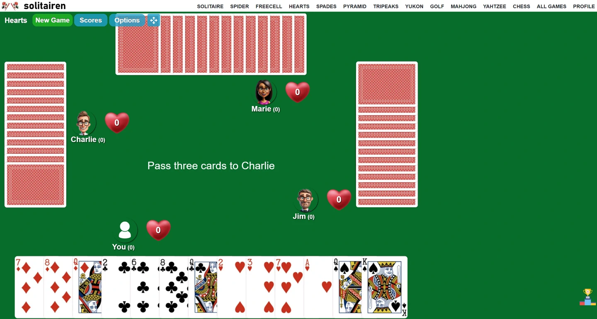

Why Hearts Online Game is the Ultimate Card Game for Competitive Gamers

Looking for a thrilling card game that takes competition to a whole new level? Look no further than Hearts Online Game! Perfect for competitive gamers, this classic card game will test your skills, strategy, and decision-making abilities like never before. Whether you're a seasoned pro or a beginner, Hearts Online Game offers an intense and immersive gaming experience that will keep you on the edge of your seat.
With its user-friendly interface and sleek design, Hearts Online Game provides a seamless and captivating gaming experience. Play against skilled opponents from around the world and prove your mastery of the game. Formulate clever strategies, outsmart your opponents, and make every move count to secure victory.
This ultimate card game is not just about luck; it requires careful planning and execution. Analyze the game, predict your opponents' moves, and adapt your strategy accordingly to gain an upper hand. With customizable options and various difficulty levels, Hearts Online Game caters to all players, making it the go-to choice for gamers of all skill levels.
Get ready to dive into the world of intense card competition with Hearts Online Game! Sharpen your strategy, test your skills, and compete against top players worldwide. It's time to rise to the challenge and become the ultimate card game champion.
The rules of Hearts Online Game
Hearts Online Game follows a set of simple yet captivating rules that make it a favorite among competitive gamers. The game is played with a standard 52-card deck and is typically played by four players. The objective of the game is to score the fewest points by avoiding certain cards, specifically the hearts suit and the queen of spades. Each heart card carries one point, while the queen of spades carries thirteen points. The player with the lowest score at the end of the game emerges as the winner. With its straightforward rules, Hearts Online Game ensures that players can jump right into the action and start competing against their opponents.
Benefits of playing Hearts Online Game
Playing Hearts Online Game offers numerous benefits that make it the ultimate card game for competitive gamers. Firstly, the game enhances critical thinking and decision-making skills. As players need to carefully analyze the game, predict their opponents' moves, and adapt their strategies accordingly, Hearts Online Game exercises the mind and sharpens strategic thinking abilities. The game also fosters patience and resilience, as players may encounter challenging situations that require them to think outside the box and find creative solutions. Additionally, Hearts Online Game is a fantastic way to socialize and connect with fellow gamers from around the world. The game's multiplayer mode allows players to compete against skilled opponents, creating a sense of camaraderie and healthy competition. Whether it's making new friends or challenging old ones, Hearts Online Game provides an interactive and engaging platform for gamers to connect and enjoy their favorite card game.
Strategies for winning at Hearts Online Game
To excel in Hearts Online Game, having a solid strategy is key. One effective strategy is to avoid taking any heart cards or the queen of spades during the early stages of the game. By doing so, players can minimize the number of points they accumulate and increase their chances of securing victory. Another strategy involves carefully observing the cards played by opponents and using that information to make calculated moves. This allows players to anticipate their opponents' intentions and adjust their strategies accordingly. Moreover, it is essential to consider the cards held by other players when deciding which cards to play. By paying attention to the cards that have already been played, players can make better-informed decisions and strategically play their cards to maximize their chances of winning. These strategies, combined with practice and experience, can significantly improve a player's chances of success in Hearts Online Game.
The competitive nature of Hearts Online Game
Hearts Online Game is renowned for its competitive nature, which attracts gamers seeking a challenge. The game requires players to constantly assess the situation, anticipate their opponents' moves, and make calculated decisions to gain an advantage. This element of competition keeps players engaged and motivated to improve their skills. Hearts Online Game also incorporates an element of risk-taking, as players must decide when to play certain cards and when to hold back, weighing the potential rewards against the risks involved. This combination of strategy, risk, and competition makes Hearts Online Game an exhilarating experience for competitive gamers who thrive on the thrill of intense card battles.
Hearts Online Game tournaments and competitions
For those seeking a higher level of competition, Hearts Online Game offers a range of tournaments and competitions that allow players to test their skills against the best of the best. These events attract top players from around the world, providing an opportunity to showcase talent and compete for prestigious titles. Hearts Online Game tournaments often feature varying difficulty levels, ensuring that players of all skill levels can participate and enjoy the excitement of competitive gameplay. With attractive prizes and recognition at stake, these tournaments add an extra layer of excitement and motivation for competitive gamers, making Hearts Online Game a popular choice in the competitive gaming community.
The popularity of Hearts Online Game among competitive gamers
Hearts Online Game has gained immense popularity among competitive gamers for several reasons. Firstly, the game's simplicity and ease of understanding make it accessible to players of all levels. Whether you're a beginner or an experienced gamer, Hearts Online Game provides an enjoyable and challenging experience. Secondly, the game's strategic depth and competitive nature keep players coming back for more. The thrill of outsmarting opponents, making calculated moves, and emerging victorious is a major draw for gamers seeking intense competition. Additionally, the online multiplayer aspect of Hearts Online Game allows players to compete against a vast pool of opponents from different parts of the world, fostering a sense of global community and enhancing the overall gaming experience. It's no wonder that Hearts Online Game has become a favorite among competitive gamers, who appreciate its engaging gameplay and the opportunity to showcase their skills on a global stage.
Tips for improving your skills in Hearts Online Game
If you're looking to improve your skills in Hearts Online Game, here are some valuable tips to keep in mind. Firstly, practice regularly to familiarize yourself with the game's mechanics and develop your strategic thinking abilities. The more you play, the better you'll understand the dynamics of the game and the strategies that work best for you. Secondly, study the gameplay of experienced players. Watching how skilled players approach the game can provide valuable insights and help you refine your own strategies. Additionally, consider joining online forums or communities dedicated to Hearts Online Game. These platforms offer a wealth of information, tips, and strategies shared by experienced players, allowing you to learn from their expertise and apply it to your own gameplay. Finally, don't be afraid to experiment and try new tactics. Hearts Online Game rewards creativity and adaptability, so exploring different strategies can help you discover unique approaches that give you an edge over your opponents.
Resources for learning and mastering Hearts Online Game
For those looking to learn and master Hearts Online Game, there are several resources available to help you improve your skills. Online tutorials and video guides provide step-by-step instructions on how to play the game, explain the rules, and offer valuable tips for success. These resources are especially useful for beginners who are new to the game and want to gain a solid understanding of its mechanics. Additionally, there are numerous strategy guides and articles available that delve deeper into advanced gameplay techniques and tactics. These resources can help experienced players refine their strategies and take their gameplay to the next level. Finally, joining online communities and forums dedicated to Hearts Online Game allows you to connect with fellow players, share experiences, and learn from each other. These resources provide a supportive and collaborative environment for gamers looking to enhance their skills and knowledge of Hearts Online Game.
Benefits of playing Hearts Online Game
Playing Hearts Online Game offers numerous benefits for competitive gamers. Firstly, it provides a platform to showcase your skills and compete against some of the best players in the world. The game's online nature allows you to connect with opponents from different countries, adding a global dimension to your gaming experience.
Secondly, Hearts Online Game hones your decision-making abilities. With each move, you need to analyze the game state, consider the potential consequences, and make the best possible decision. This skill translates to various aspects of life, including problem-solving and critical thinking.
Additionally, Hearts Online Game helps improve your strategic thinking. To win, you need to formulate and execute effective strategies. This involves predicting your opponents' moves, adapting your approach, and managing your resources wisely. These strategic skills can be applied to other games and real-life situations, making you a more strategic thinker overall.
In summary, playing Hearts Online Game offers the opportunity to compete with top players worldwide, enhances decision-making abilities, and sharpens strategic thinking skills.
Strategies for winning at Hearts Online Game
To excel at Hearts Online Game, it's essential to develop effective strategies. Here are some strategies to give you an edge in the game:
1. Avoid the Queen of Spades: The Queen of Spades carries a high penalty, and acquiring it can significantly hinder your chances of winning. Try to pass it to your opponents or avoid picking it up during gameplay.
2. Control the Lead: Being in control of the lead gives you an advantage as it allows you to dictate the flow of the game. Aim to have cards of high value in the lead position to force your opponents to play cards they don't want to.
3. Count Cards: Keeping track of the cards played can give you valuable information about the remaining cards in the deck. This information enables you to make more informed decisions and strategize accordingly.
4. Play to Your Strengths: Identify your strengths, whether it's collecting low cards or shooting for specific suits, and adapt your strategy accordingly. Playing to your strengths can give you a competitive edge and increase your chances of winning.
Remember, these strategies are not foolproof, and adaptability is key. Pay attention to your opponents' moves, adjust your strategy as the game progresses, and be flexible in your decision-making.
The competitive nature of Hearts Online Game
Hearts Online Game is known for its competitive nature, attracting gamers who thrive on intense competition. The game's rules, mechanics, and strategic depth contribute to its competitive appeal.
One of the reasons for its competitiveness is the element of risk and reward. Every move carries consequences, and players must carefully weigh their options. The high-stakes nature of the game creates a sense of excitement and tension, making each decision crucial.
Moreover, Hearts Online Game allows players to directly interact with opponents, adding a social and competitive aspect to the gameplay. The ability to outmaneuver and outsmart your opponents creates a sense of satisfaction and accomplishment when you emerge victorious.
The competitive nature of Hearts Online Game is further heightened by the opportunity to participate in tournaments and competitions. These events bring together the best players, providing a platform to showcase skills, learn from others, and compete for prestigious titles and prizes.
Hearts Online Game tournaments and competitions
Hearts Online Game has a thriving tournament scene, offering competitive gamers the chance to take their skills to the next level. Tournaments range from casual, friendly competitions to high-stakes, professional events.
Participating in tournaments allows you to test your abilities against top players, gain exposure in the gaming community, and potentially earn recognition and rewards. Tournaments often feature a variety of formats, such as single-elimination, round-robin, or Swiss-system, providing diverse experiences and challenges.
In addition to online tournaments, there are offline competitions where players can meet in person and compete for glory. These events create a unique atmosphere, allowing players to bond, share strategies, and form connections within the gaming community.
Whether you're a seasoned competitor or a newcomer looking to dip your toes into the world of competitive gaming, Hearts Online Game tournaments and competitions offer an exciting avenue to showcase your skills, meet like-minded individuals, and immerse yourself in the competitive gaming scene.
The popularity of Hearts Online Game among competitive gamers
Hearts Online Game has gained substantial popularity among competitive gamers due to its unique blend of strategy, skill, and competition. The game's challenging nature appeals to those seeking a mentally stimulating experience, making it a favorite among competitive gamers.
The online aspect of Hearts Online Game allows players to connect with a vast community of like-minded individuals, further fueling its popularity. The ability to compete against skilled opponents from around the world adds an element of diversity and unpredictability, keeping the gaming experience fresh and exciting.
Furthermore, Hearts Online Game's user-friendly interface and customizable options make it accessible to players of all skill levels. Whether you're a seasoned pro or a beginner, the game caters to your needs, ensuring an enjoyable and rewarding experience for all.
The popularity of Hearts Online Game is also evident in the numerous online communities and forums dedicated to discussing strategies, sharing experiences, and organizing tournaments. These communities foster a sense of camaraderie and provide a platform for players to connect and learn from each other.
Tips for improving your skills in Hearts Online Game
To improve your skills in Hearts Online Game, consider the following tips:
1. Practice regularly: Like any game, practice is essential to improve your skills. Dedicate time to play and familiarize yourself with different strategies and card combinations.
2. Analyze your gameplay: After each game, take some time to reflect on your performance. Identify areas where you could have made better decisions or executed strategies more effectively.
3. Study the game: Seek out resources such as tutorials, guides, and articles on Hearts Online Game strategy. Learning from experienced players can help you gain insights and refine your gameplay.
4. Observe top players: Watch streams or recordings of high-level gameplay to observe how experienced players approach the game. Analyze their strategies, decision-making, and adapt their techniques to your own gameplay.
5. Join online communities: Engage with other Hearts Online Game enthusiasts in online communities and forums. Share your experiences, ask for advice, and learn from the experiences of others. This interaction can broaden your perspective and provide valuable learning opportunities.
By applying these tips consistently and having a growth mindset, you can steadily improve your skills in Hearts Online Game and become a formidable competitor.
Resources for learning and mastering Hearts Online Game
If you're looking to learn and master Hearts Online Game, there are several resources available to assist you:
1. Online tutorials and guides: Numerous websites offer comprehensive tutorials and guides that cover the rules, strategies, and advanced techniques of Hearts Online Game. These resources can provide a solid foundation for learning the game.
2. YouTube channels and streams: Many experienced Hearts Online Game players share their gameplay and provide commentary on YouTube or through live streams. Watching these videos can give you insights into different strategies and approaches to the game.
3. Online forums and communities: Joining online forums and communities dedicated to Hearts Online Game can connect you with experienced players who are willing to share their knowledge and offer advice. These spaces also provide opportunities to engage in discussions and ask specific questions.
4. Books and eBooks: Some authors have written books and eBooks specifically focused on Hearts Online Game strategy. These resources delve deeper into the intricacies of the game and can provide valuable insights for players looking to take their skills to the next level.
By leveraging these resources and actively seeking to improve your knowledge and skills, you can accelerate your progress in mastering Hearts Online Game.